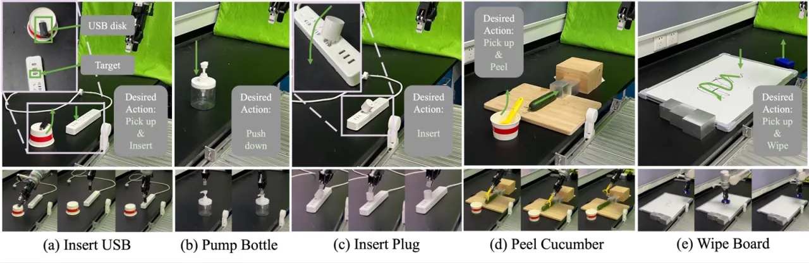

02 方法
ForceVLA 以 π₀ 为骨干，融合 RGB 视觉、自然语言指令、本体感知状态与 6 轴力-扭矩数据，通过 FVLMoE 模块在 VLM 编码之后动态整合力特征，最终由基于 conditional flow matching 的动作头输出连续轨迹。

FVLMoE：力感知混合专家融合模块
FVLMoE 的核心设计分三步：
- Input Mapping：原始 6D 力数据 f_raw ∈ ℝ⁶ 经线性投影生成力 token E_F，与 VLM 输出的视觉-语言嵌入 E_VL 拼接为多模态序列。
- Multimodal Routing & Fusion：拼接序列通过 Transformer 编码器进行多头自注意力建模，再路由至含 E=4 个专家网络（MLP）的稀疏 MoE 层，动态门控选择 top-k=1 个专家处理每个 token，残差连接整合 MoE 输出。
- Action Injection：融合特征 G_FVLMoE ∈ ℝ^(H_action × D_a) 以 element-wise addition 注入状态与动作投影，再由 flow matching 动作头解码为机器人轨迹。
关键设计选择：Late-stage Force Fusion
力信息在 VLM 编码之后引入，而非之前。消融实验表明，若在 VLM 之前融合力特征（MoE-before-VLM 变体），预训练视觉-语言表征会被破坏，导致成功率降至 0%。"晚融合"策略在保留 VLM 语义能力的同时，赋予模型实时力自适应能力。
ForceVLA-Data：同步多模态数据集
为支撑训练，团队采集了专用数据集：244 条轨迹，140K 个同步时间步，覆盖 5 种接触密集型任务（Bottle Pumping、Plug Insertion、USB Drive Insertion、Whiteboard Wiping、Cucumber Peeling），由 5 名专家操作员在 Flexiv Rizon 7-DOF 机械臂上完成，配备双 RGB-D 相机与 6 轴力-扭矩传感器。
